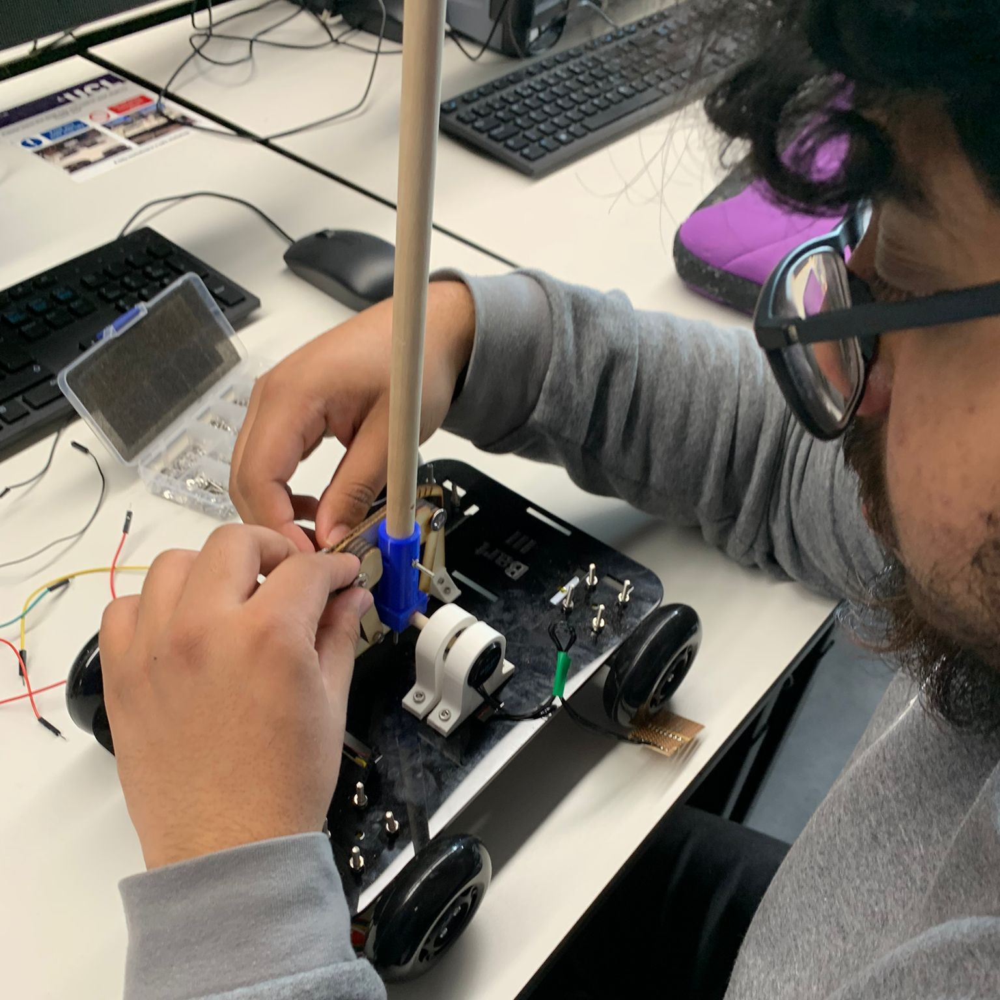
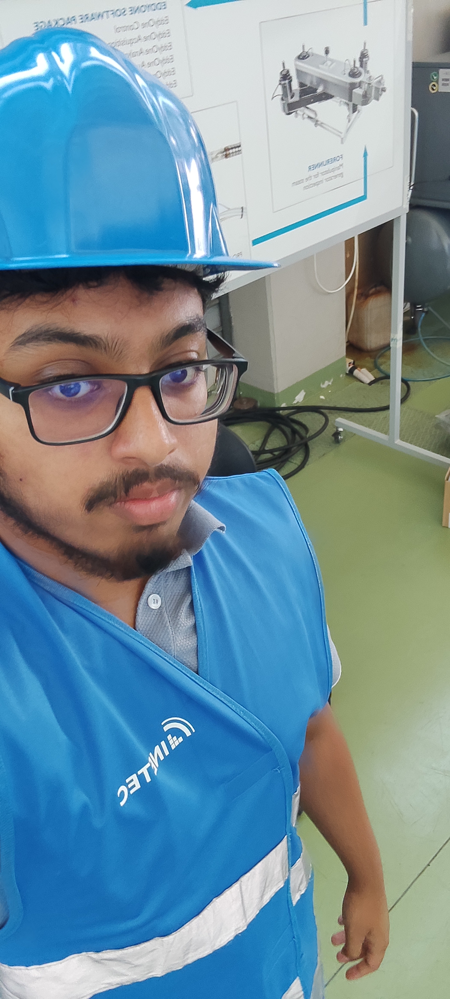
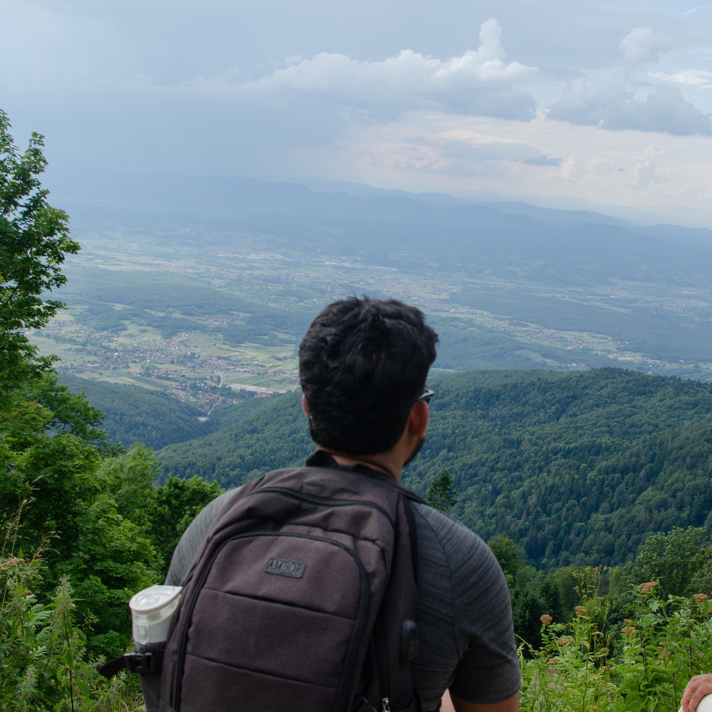
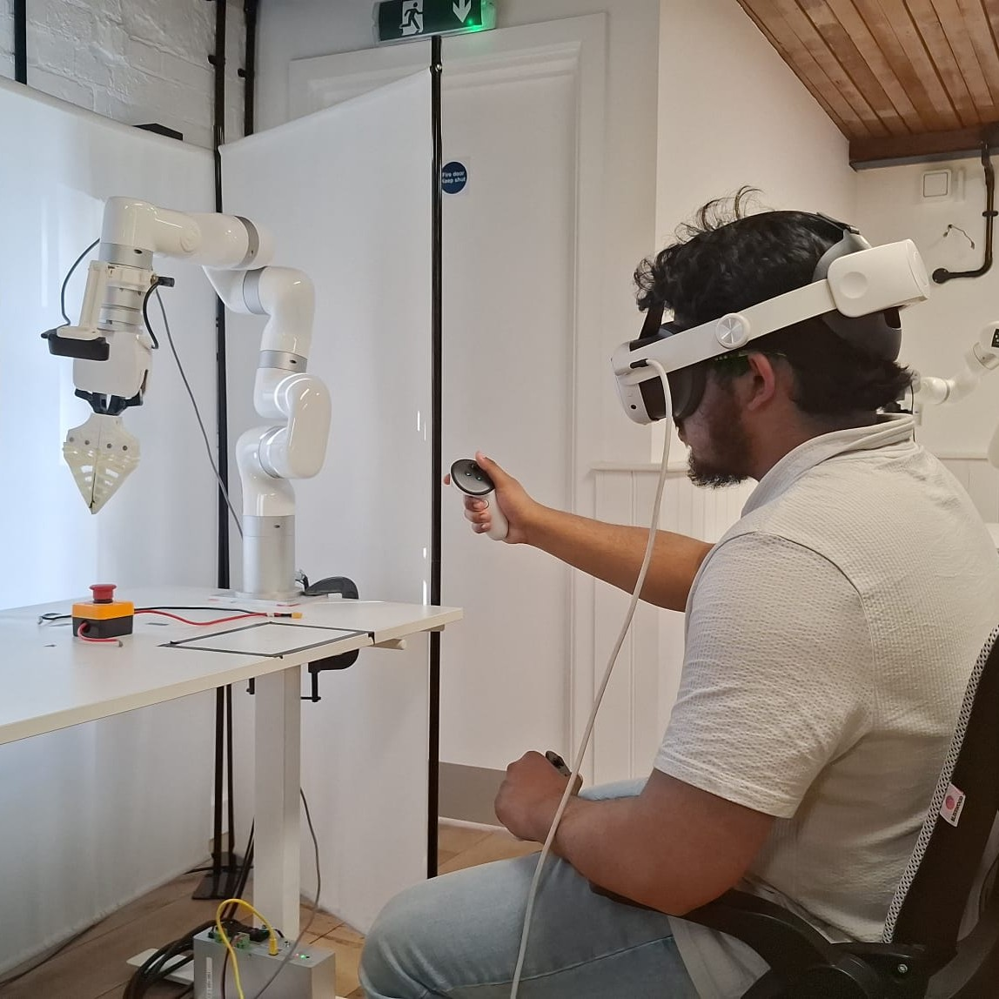
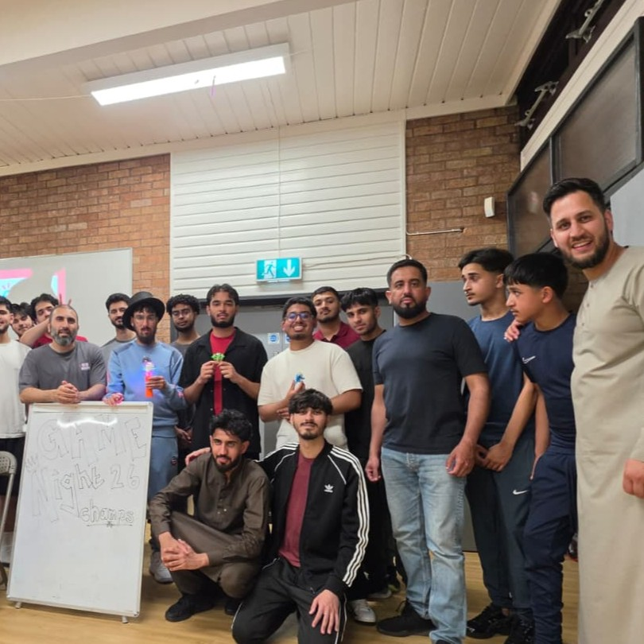
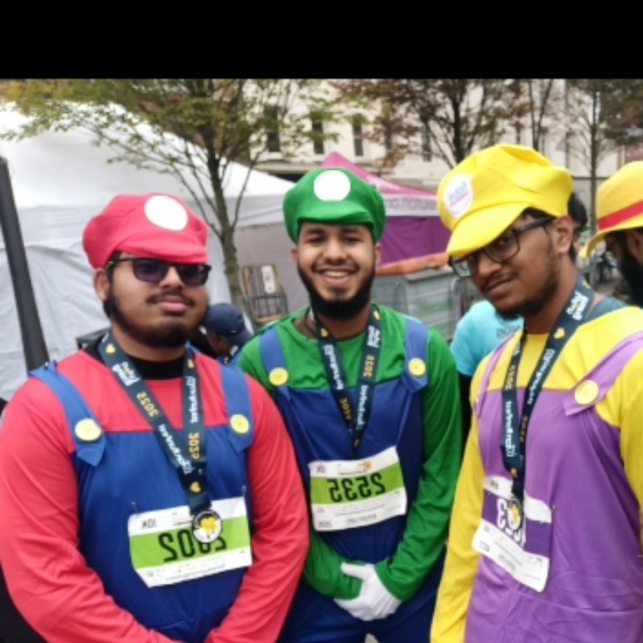

Aayan Islam
I bridge the gap between AI and physical systems. As a Robotics & AI student at UCL (82% 1st Yr), I have taken part in building autonomous pipelines—from training Vision-Language-Action (VLA) models for robotic manipulation to engineering real-time control algorithms and physics simulations. Backed by industry experience in teleoperation, nuclear robotics, and AI trust research, I build intelligent systems engineered for the physical world.
Beyond engineering, I am deeply committed to community impact and leadership. Over the past two years, I have worked my way up at Friends Of Bright Eyes—a charity dedicated to supporting children with various disabilities—progressing from a volunteer to a senior social care worker, a lead session planner, and ultimately into a Supervisor role. In this position, I manage critical on-site operations: keeping center environments entirely risk-free, orchestrating registers and payments, and acting as the primary communication link between the charity and the families we serve.







